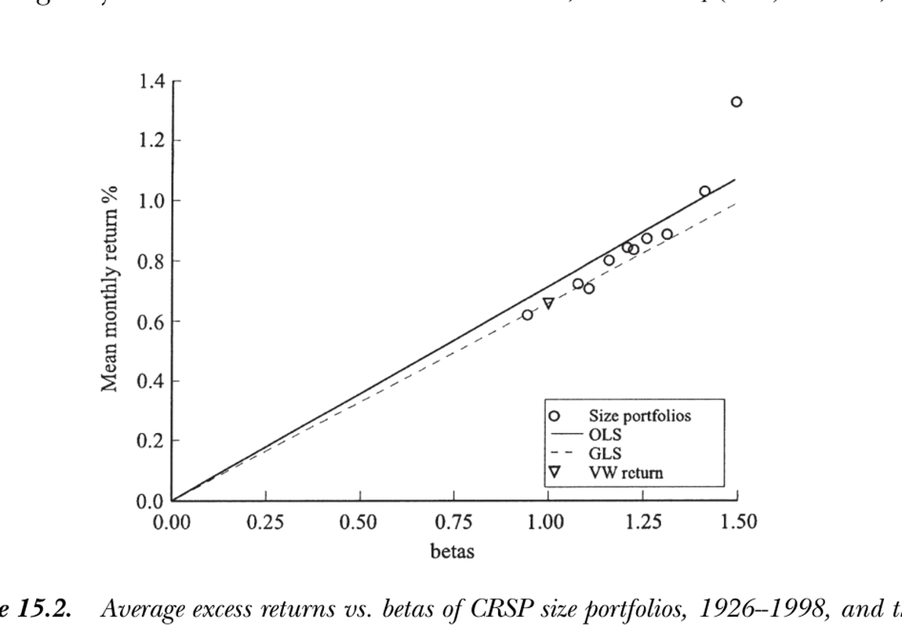
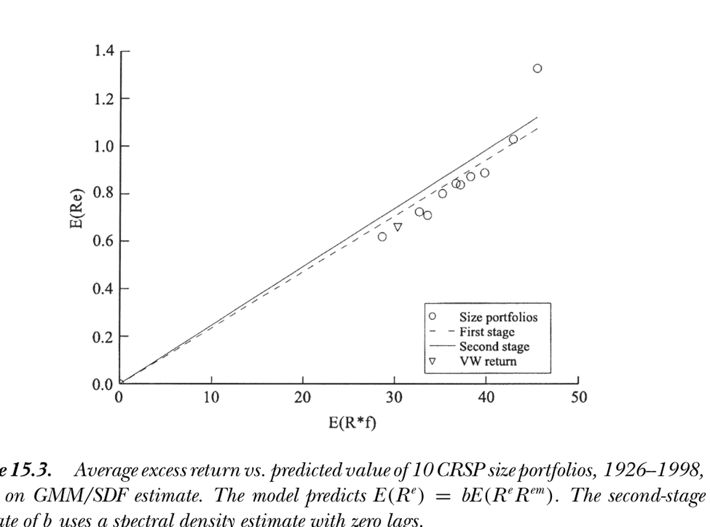

15. Time-Series, Cross-Section, and GMM/DF Tests of Linear Factor Models
15. Time-Series, Cross-Section, and GMM/DF Tests of Linear Factor Models
本章导读 第 12–14 章给出了三套方法（时序回归、截面回归、GMM/贴现因子），它们相似但不相同。本章（Cochrane 第 15 章）用一个经典实证问题——CAPM 在 CRSP 规模组合上的检验——把它们并排跑一遍，并做蒙特卡洛与自助法评估。核心结论：三法给出几乎完全相同的估计、标准误、t 与 χ² 统计量。这应能打消"GMM/贴现因子是个不可信的新方法"的顾虑。两个值得记住的实务发现：① 传统 i.i.d. 假设的 χ² 检验只有约一半的正确 size（该拒绝时只拒一半），简单的 GMM 修正即可补救；② 坏的谱密度矩阵（如 24 滞后无加权）能毁掉任何估计与检验；③ 二阶"有效" GMM 仅比一阶略有效、却不够稳健——如同 OLS 常优于 GLS，一阶 GMM 在许多应用中更可取。
15. Time-Series, Cross-Section, and GMM/DF Tests of Linear Factor Models
Overview Chapters 12–14 gave three methods (time-series regression, cross-sectional regression, GMM/discount factor) that are similar but not identical. This chapter (Cochrane Ch 15) runs them side by side on a classic empirical question — testing the CAPM on CRSP size portfolios — and evaluates them via Monte Carlo and bootstrap. The central finding: the three produce almost exactly the same estimates, standard errors, t- and χ²-statistics. This should dispel the worry that GMM/discount factor is an untrustworthy "new" method. Two practical lessons worth remembering: ① the traditional i.i.d. χ² test has only about half the correct size (rejects half as often as it should), which simple GMM corrections repair; ② a bad spectral density matrix (e.g. 24 lags, no weighting) can ruin any estimate and test; ③ second-stage "efficient" GMM is only slightly more efficient than first-stage and less robust — just as OLS often beats GLS, first-stage GMM may be preferable in many applications.
15.1 CAPM 在规模组合上的三种方法 / Three Approaches to the CAPM in Size Portfolios
三法如何画那条"期望收益-贝塔"线，方式不同：
15.1 Three Approaches to the CAPM in Size Portfolios
The three methods draw the "expected return-beta" line differently:
- 时序回归：由因子均值估溢价 \(\hat\lambda=E_T(R^{em})\)，让线精确穿过两点——市场收益与无风险利率（二者每个样本里定价误差为零），无视其他资产（图 15.1）。因子是收益时这就是 ML 估计。
- OLS 截面回归：选线以最小化所有资产的平方定价误差，故允许市场收益有点定价误差以更好拟合其他资产（图 15.2 实线，斜率略高于因子均值）。
- GLS 截面回归：按残差协方差阵 \(\Sigma\) 加权；若把市场（或检验资产张成的因子）纳入，它无残差方差，GLS 便全力盯它，于是退化为时序回归——图 15.2 中 GLS 虚线穿过原点与市场点、几乎与时序回归无异（规模组合近乎张成市场收益）。
- Time-series regression: estimates the premium from the factor mean \(\hat\lambda=E_T(R^{em})\), forcing the line through exactly two points — the market return and the risk-free rate (each with zero pricing error in every sample), ignoring the other assets (Figure 15.1). When the factor is a return, this is the ML estimate.
- OLS cross-sectional regression: picks the line to minimize the squared pricing errors of all assets, so allows some market pricing error to fit the others better (Figure 15.2, solid line, slope slightly above the factor mean).
- GLS cross-sectional regression: weights by the residual covariance matrix \(\Sigma\); if the market (or a factor spanned by the test assets) is included it has no residual variance, so GLS focuses entirely on it and reduces to the time-series regression — in Figure 15.2 the GLS dashed line passes through the origin and the market point, visually indistinguishable from the time-series result (the size portfolios nearly span the market return).

图 15.2 CRSP 规模组合（1926–1998）平均超额收益对 β。OLS 截面回归（实线）斜率略高以拟合所有点；GLS（虚线）几乎穿过原点与市场（VW）收益、与时序回归一致。最右上方偏离直线的点是最小市值组合——"小公司异象"。
Figure 15.2 Average excess returns vs. betas of CRSP size portfolios (1926–1998). The OLS cross-sectional line (solid) has a slightly higher slope to fit all points; GLS (dashed) passes near the origin and the market (VW) return, coinciding with the time-series regression. The top-right point off the line is the smallest-cap portfolio — the "small-firm anomaly."
GMM/贴现因子。 横轴改为"收益与因子的二阶矩"而非 β，但点的位置看不出区别（图 15.3）。一阶估计是平均收益对二阶矩的 OLS 截面回归，定价误差几乎与 OLS 截面回归相同；二阶估计按谱密度矩阵加权——而谱密度阵不等于残差协方差阵，故二阶 GMM不像 GLS 那样穿过市场组合（斜率略高）。值得注意：即便假设回归模型与资产定价模型为真、因子残差 i.i.d. 正态，贴现因子形式的谱密度阵也不退化为残差协方差阵——参数 \(b=\lambda/E(R^{em2})\)，其他资产对确定 \(b\) 仍有用。
GMM/discount factor. The horizontal axis becomes the second moment of returns and factors rather than β, but you couldn't tell from the placement of the dots (Figure 15.3). The first-stage estimate is an OLS cross-sectional regression of average returns on second moments, with pricing errors almost identical to the OLS cross-sectional regression on betas; the second-stage estimate weights by the spectral density matrix — which is not the residual covariance matrix, so second-stage GMM does not pass through the market portfolio as GLS does (slope slightly higher). Notably, even assuming the regression and asset pricing models are true with i.i.d. normal factors and residuals, the discount-factor spectral density matrix does not reduce to the residual covariance matrix — the parameter \(b=\lambda/E(R^{em2})\), and the other assets remain useful for determining \(b\).

图 15.3 基于 GMM/贴现因子估计的 10 个 CRSP 规模组合（1926–1998）平均超额收益对预测值。模型预测 \(E(R^e)=bE(R^eR^{em})\)，二阶估计用零滞后谱密度。一阶（OLS）与各回归法的定价误差几乎一致。
Figure 15.3 Average excess return vs. predicted value of 10 CRSP size portfolios (1926–1998), GMM/discount factor estimate. The model predicts \(E(R^e)=bE(R^eR^{em})\); the second-stage estimate uses a zero-lag spectral density. First-stage (OLS) pricing errors nearly match those of the regression methods.
经典设定下三法几乎相同 / In the classic setup the three are almost identical 参数估计、标准误、t 统计量与"定价误差联合为零"的 χ² 统计量在三法间几乎完全一致（表 15.1、15.2）。截面回归与 GMM/DF 因从截面估溢价而少一个自由度（χ²(9) vs 时序的 χ²(10)）。CAPM 在此未被拒绝（小公司效应在样本后段消失，详见第 20 章）。GRS 有限样本 F 检验与渐近 χ² 给出几乎相同的拒绝概率——可见此数据集里"有限样本精确"并不那么要紧。唯一的灾难来自 24 滞后无加权谱密度阵：它在样本中非正定，给出无意义的负 \(\hat\alpha'\operatorname{cov}(\hat\alpha)^{-1}\hat\alpha\)。Jagannathan-Wang (2000) 解析地证明：因子非收益时，GMM/DF 与期望收益-贝塔截面回归的估计、标准误、χ² 渐近完全相同。Parameter estimates, standard errors, t-statistics, and the χ² that pricing errors are jointly zero are almost exactly the same across the three methods (Tables 15.1, 15.2). The cross-sectional and GMM/DF tests have one fewer degree of freedom (χ²(9) vs the time-series χ²(10)) because the premium is estimated from the cross section. The CAPM is not rejected here (the small-firm effect vanishes late in the sample; see Ch 20). The GRS finite-sample F-test and the asymptotic χ² give nearly identical rejection probabilities — so "finite-sample exactness" matters little in this data set. The only disaster is the 24-lag unweighted spectral density matrix: non-positive-definite in sample, it gives a nonsensical negative \(\hat\alpha'\operatorname{cov}(\hat\alpha)^{-1}\hat\alpha\). Jagannathan-Wang (2000) show analytically that when the factor is not a return, GMM/DF and the expected return-beta cross-sectional regression have asymptotically identical estimates, standard errors, and χ².
15.2 蒙特卡洛与自助法 / Monte Carlo and Bootstrap
为检验各标准误/检验公式是否真能刻画抽样变动，作者做了两组蒙特卡洛（i.i.d. 正态）与两组分块自助法（按 3 个月一组重抽，保留短阶自相关与持续异方差），分别在零假设（CAPM 真，看 size）与备择（CAPM 假，看 power）下进行，长样本 876 月、短样本 240 月。由于一阶 GMM/DF 与 OLS 截面回归在每个人工样本里几乎相同、GLS 截面回归与时序回归几乎相同，故关键比较是时序回归（= i.i.d. 正态下的 ML）vs 一阶/二阶 GMM/DF。
15.2 Monte Carlo and Bootstrap
To check whether the standard-error/test formulas truly capture sampling variation, the author runs two Monte Carlos (i.i.d. normal) and two block-bootstraps (resampling in groups of 3 months, preserving short-order autocorrelation and persistent heteroskedasticity), each under the null (CAPM true, for size) and the alternative (CAPM false, for power), with a long sample of 876 months and a short one of 240. Since first-stage GMM/DF and OLS cross-sectional regression are nearly identical in every artificial sample, as are GLS cross-sectional and time-series regression, the key comparison is time-series regression (= ML under i.i.d. normality) vs. first-/second-stage GMM/DF.
三大蒙特卡洛/自助法结论 / Three Monte Carlo/bootstrap conclusions ① GMM/DF 检验的行为与时序检验几乎完全相同（表 15.3–15.5）：每种谱密度估计下，size 与 power 几乎逐行相同；β 与二阶矩之别、时序对截面的微小效率差，都不影响抽样分布。② i.i.d. 假设有偏：长样本分块自助法显示传统 i.i.d. χ² 只有约一半正确 size（5% 检验只拒 2.8%、1% 检验只拒 0.6%）；从 i.i.d. 放宽到 0 滞后补回约一半失真，再加合理的自相关修正补回其余——若要做经典回归检验，应修正分布理论而非用 ML 的 i.i.d. 分布。③ 24 滞后无加权谱密度是灾难：长样本里其 1% 尾出现在 χ²=440（而非 χ²(10) 的 23.2），非正定。① The GMM/DF test behaves almost exactly like the time-series test (Tables 15.3–15.5): for each spectral density estimate, size and power are nearly identical row by row; neither the β-vs-second-moment difference nor the small time-series-vs-cross-section efficiency gap affects the sampling distribution. ② The i.i.d. assumption is biased: the long-sample block-bootstrap shows the traditional i.i.d. χ² has only about half the correct size (a 5% test rejects 2.8%, a 1% test 0.6%); relaxing i.i.d. to 0 lags recovers about half the distortion, and a sensible autocorrelation correction the rest — to do classic regression tests, correct the distribution theory rather than use ML's i.i.d. distributions. ③ The 24-lag unweighted spectral density is a disaster: in the long sample its 1% tail occurs at χ²=440 (vs. 23.2 for χ²(10)), non-positive-definite.
一阶 vs 二阶 GMM（表 15.5）。 长样本里二阶"有效"估计确实变动略小（0.61–0.62 vs 一阶 0.64），但效率增益极小，故偏好一阶 OLS 估计损失不大。坏处：用坏（甚至奇异）谱密度阵作权矩阵会剧烈影响估计（24 滞后下二阶估计变动巨大、标准误虚低），尽管对标准误本身只是次要影响。短样本（240 月）里二阶估计不再更有效，且其渐近标准误严重低估真实抽样变动（代表一个并不存在的"指望中的效率"）。
First- vs. second-stage GMM (Table 15.5). In the long sample the second-stage "efficient" estimate does vary slightly less (0.61–0.62 vs. 0.64 first-stage), but the efficiency gain is tiny, so little is lost by preferring first-stage OLS estimates. The downside: using a bad (even singular) spectral density matrix as the weighting matrix has a dramatic effect on estimation (the 24-lag case gives wildly variable second-stage estimates with artificially small standard errors), though only a secondary effect on standard errors themselves. In the short sample (240 months) the second-stage estimate is no longer more efficient, and its asymptotic standard errors substantially understate the true sampling variation (a hoped-for efficiency that is not there).
实务取舍：偏向一阶 GMM / Practical takeaway: lean toward first-stage GMM 即便在这个最简单的设定里，一阶 GMM 显然是估计核心参数（及考察各资产定价误差及其模式）的更好选择：它几乎与时序回归一样有效、却对坏的谱密度阵稳健得多。这呼应了 §11.5 "OLS 常优于 GLS" 的告诫。同时也要打消一个误解：关于 GMM 小样本困难的文献都刻意选难设定（高度非线性、持续异方差、弱工具等），但在标准设定里 GMM 表现良好。Even in this simplest setup, first-stage GMM is clearly the better choice for estimating the central parameter (and hence for examining individual pricing errors and their pattern across assets): it is nearly as efficient as the time-series regression yet far more robust to a bad spectral density matrix. This echoes the §11.5 lesson that "OLS often beats GLS." It should also dispel a misconception: the literature on GMM's small-sample difficulties deliberately uses hard setups (highly nonlinear, persistent heteroskedasticity, weak instruments), but in standard setups GMM behaves well.
小结 / Summary
在 CAPM/规模组合这一经典设定里，时序回归、截面回归（OLS/GLS）、GMM/贴现因子（一阶/二阶）给出几乎完全相同的估计、标准误与 χ² 检验——"新"的 GMM/DF 方法并不神秘。三条实务训诫：传统 i.i.d. 分布只有一半正确 size，须用 GMM 修正；坏谱密度阵能毁掉一切；二阶"有效"GMM 效率增益微小却不稳健，故多数应用宜用一阶 GMM。下一章（Part II 收官）正面讨论"该用哪种方法？"。
Summary
In the classic CAPM/size-portfolio setup, time-series regression, cross-sectional regression (OLS/GLS), and GMM/discount factor (first/second stage) give almost exactly the same estimates, standard errors, and χ² tests — the "new" GMM/DF method is no mystery. Three practical lessons: the traditional i.i.d. distribution has only half the correct size and needs GMM correction; a bad spectral density matrix can ruin everything; and second-stage "efficient" GMM offers tiny efficiency gains but less robustness, so first-stage GMM is preferable in most applications. The next chapter (the capstone of Part II) addresses "Which method?" head-on.